5th Grade Animals & Nature Worksheets
530 Animals & Nature resources for 5th Grade, ready to print: Zucchini, Zebra, Wheat, Western capercaillie and more. Each resource page shows the grade range, page count and a preview and links straight to the product on TpT.
530 resources
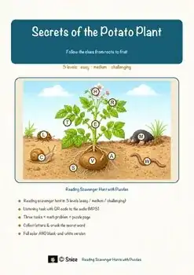
Potato Plant Reading Comprehension Passages | Science Scavenger Hunt 5-6
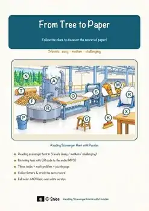
Paper Making Reading Comprehension Passages | Science Scavenger Hunt 5-6
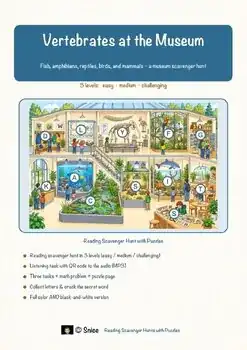
Vertebrates Reading Scavenger Hunt | Animal Groups Science Escape Activity
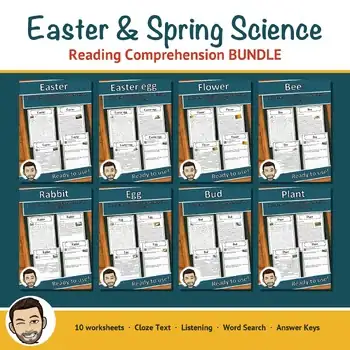
Easter & Spring Reading Comprehension BUNDLE | Flowers, Bees & Plant Growth
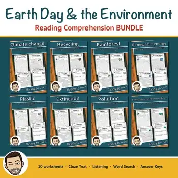
Earth Day Reading Comprehension BUNDLE | Climate, Recycling & Pollution
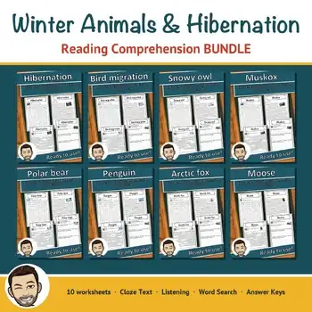
Winter Animals Reading Comprehension BUNDLE | Hibernation & Migration
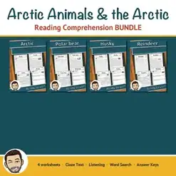
Arctic Animals Reading Comprehension BUNDLE | Polar Bears & Huskies
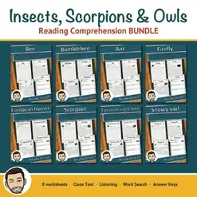
Insects & Owls Reading Comprehension BUNDLE | Cloze & Word Search
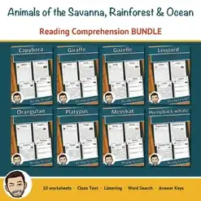
Savanna, Rainforest & Ocean Animals Reading Comprehension BUNDLE
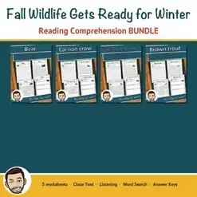
Fall Animals Worksheets Bundle | Grades 5-8 | How Wildlife Prepares for Winter
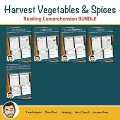
Harvest Vegetables Worksheets Bundle | Grades 5-8 | Fall Reading Passages
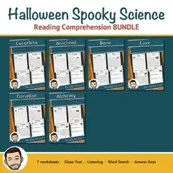
Halloween Science Worksheets Bundle | Grades 5-8 | Bats, Spiders & Bones
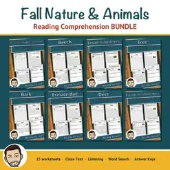
Fall Worksheets Bundle | Grades 5-8 | Autumn Trees & Animals Reading Passages
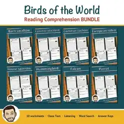
Birds Reading Comprehension BUNDLE | Cloze, Listening & Word Search
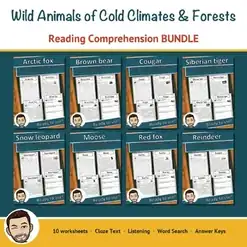
Wild Animals Reading Comprehension BUNDLE | Polar & Forest Animals
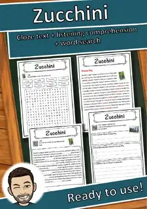
Zucchini – Reading Comprehension: Cloze Text, Listening Task & Word Search
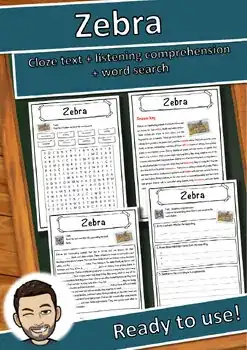
Zebra – Reading Comprehension: Cloze Text, Listening Task & Word Search
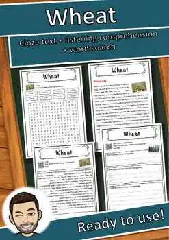
Wheat – Reading Comprehension: Cloze Text, Listening Task & Word Search
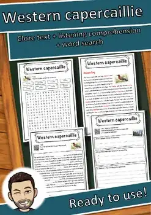
Western capercaillie – Reading Comprehension: Cloze, Listening & Word Search
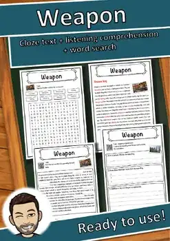
Weapon – Reading Comprehension: Cloze Text, Listening Task & Word Search
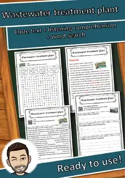
Wastewater treatment plant – Reading Worksheet: Cloze, Listening & Word Search
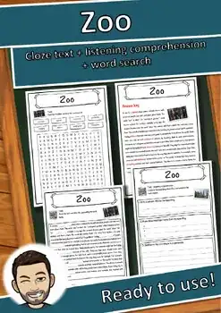
Zoo – Reading Comprehension: Cloze Text, Listening Task & Word Search
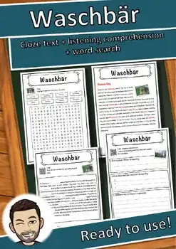
Waschbär – Reading Comprehension: Cloze Text, Listening Task & Word Search
Zander – Reading Comprehension: Cloze Text, Listening Task & Word Search
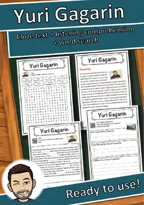
Yuri Gagarin – Reading Comprehension: Cloze Text, Listening Task & Word Search
Vitamin – Reading Comprehension: Cloze Text, Listening Task & Word Search
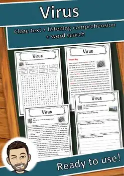
Virus – Reading Comprehension: Cloze Text, Listening Task & Word Search
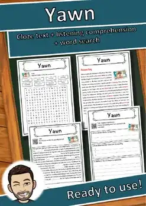
Yawn – Reading Comprehension: Cloze Text, Listening Task & Word Search
Vertebrate – Reading Comprehension: Cloze Text, Listening Task & Word Search
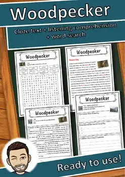
Woodpecker – Reading Comprehension: Cloze Text, Listening Task & Word Search
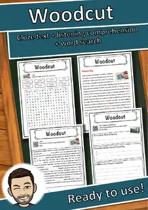
Woodcut – Reading Comprehension: Cloze Text, Listening Task & Word Search
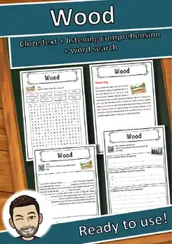
Wood – Reading Comprehension: Cloze Text, Listening Task & Word Search
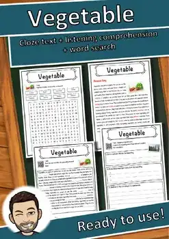
Vegetable – Reading Comprehension: Cloze Text, Listening Task & Word Search
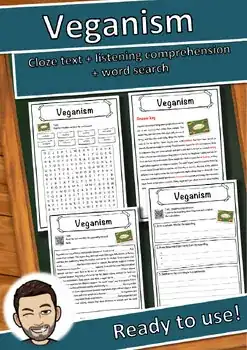
Veganism – Reading Comprehension: Cloze Text, Listening Task & Word Search
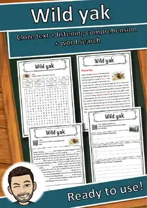
Wild yak – Reading Comprehension: Cloze Text, Listening Task & Word Search
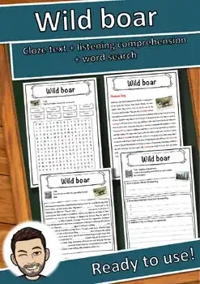
Wild boar – Reading Comprehension: Cloze Text, Listening Task & Word Search
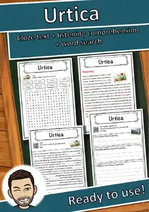
Urtica – Reading Comprehension: Cloze Text, Listening Task & Word Search
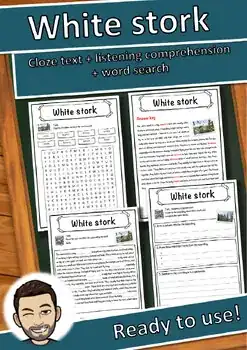
White stork – Reading Comprehension: Cloze Text, Listening Task & Word Search
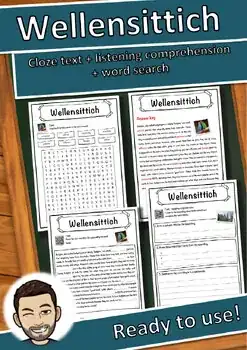
Wellensittich – Reading Comprehension: Cloze Text, Listening Task & Word Search
Turtle – Reading Comprehension: Cloze Text, Listening Task & Word Search
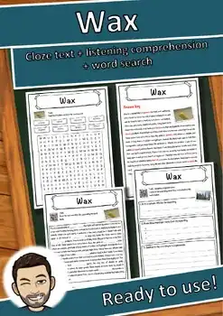
Wax – Reading Comprehension: Cloze Text, Listening Task & Word Search
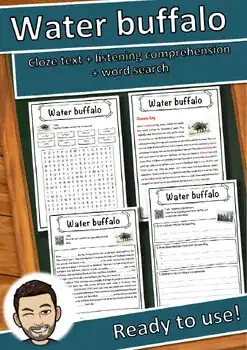
Water buffalo – Reading Comprehension: Cloze Text, Listening Task & Word Search
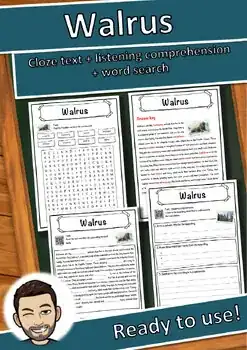
Walrus – Reading Comprehension: Cloze Text, Listening Task & Word Search
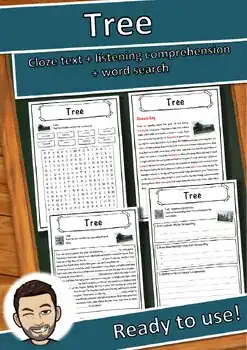
Tree – Reading Comprehension: Cloze Text, Listening Task & Word Search
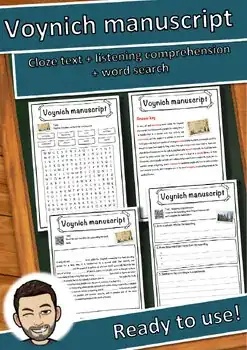
Voynich manuscript – Reading Comprehension: Cloze, Listening & Word Search
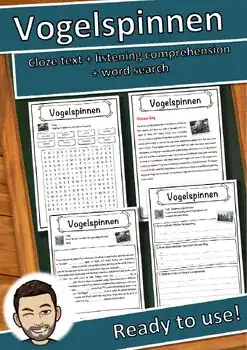
Vogelspinnen – Reading Comprehension: Cloze Text, Listening Task & Word Search
Violence – Reading Comprehension: Cloze Text, Listening Task & Word Search
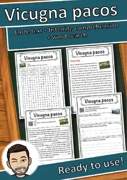
Vicugna pacos – Reading Comprehension: Cloze Text, Listening Task & Word Search
No resources found – try a different search term or filter.